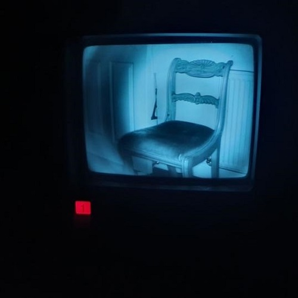
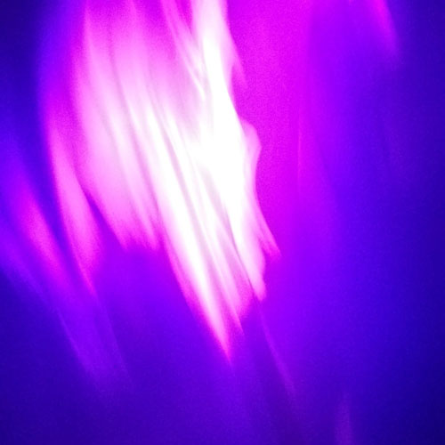

nonference
description

analogue boundaries
This piece aims to create an immersive environment through lighting, recorded objects and sound.
The installation explores the theme of displacement, both of the objects found within and the viewer’s own perspective. The sounds, similarly, will consist of voices, displaced from the mouths of their speakers and diffused within the space from localised points. As the viewer navigates the virtual environment, the soundscape shifts, as though listening in, voyeuristically, to multiple indistinguishable conversations.
comfort in isolation

just having a good quarantime